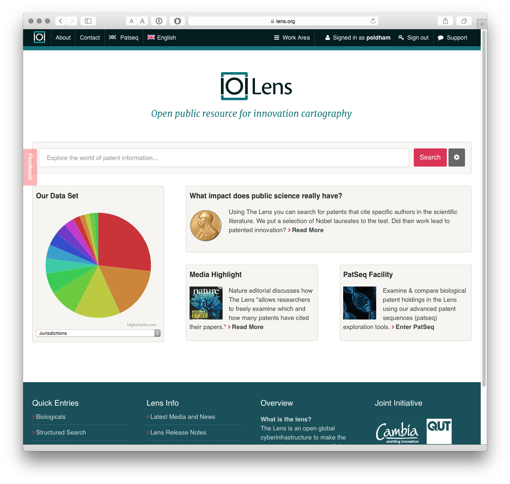
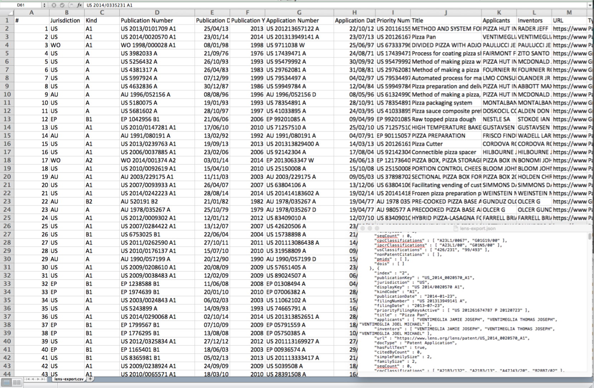

Chapter 6 The Lens
##Introduction
In this chapter we provide a brief introduction to The Lens patent database as a free source of data for patent analytics.
The Lens is a patent database based in Australia that describes itself as “an open global cyberinfrastructure to make the innovation system more efficient and fair, more transparent and inclusive.” The main way it seeks to do this is by providing access to patent information with a particular focus on sequence information as well as analysis of issues such as DNA related patent activity. An important feature of The Lens for those working on biotechnology related subjects is PatSeq.
##Getting Started
To get the most out of the Lens the first step is to sign up for an account from the front page.

It is possible to begin searching directly from the front page. However, selecting the small button next to the search box takes you to the search controls.

As we can see we can use boolean queries, for searching a range of fields including the full text, title, abstract or claims (a major plus). We can also select one or multiple jurisdictions. In addition the results can be refined to patent applications or grants, and there are options for full text or one doc per family (which greatly reduces the number of results).
We used our standard query “pizza”, all jurisdictions, and one document per family. We turned stemming off.
Our search for pizza returned 13,714 families from a total of 29,617 publications containing the term in the full text. This approach assists with refining searches by reducing duplication.
The Lens allows users to create collections of up to 10,000 results from a search. To create a collection use the Create Collection button and name the collection. How you add records to a collection is not obvious and involves 2 steps.
- Check the arrow next to Document as in the image below. When the mouse hovers over the arrow a menu will pop up. Choose
Top 10k Results. - In the box displaying the name of the collection above the results press the + arrow to add the 10,000 documents to the Collection.

Once you understand this process it is easy to add documents to collections. One very nice feature of the Lens is that when a collection has been created we can share it with others using the Share button. Users have the option of maintaining a private collection or publicly sharing. The URL for the collection we just generated is https://www.lens.org/lens/collection/9606.
We could imagine that for more restricted searches, and taking confidentiality issues into account, this could be a useful way of sharing patent data with colleagues. One useful addition would be the ability to share with groups based on email addresses or something similar (although that may be possible by choosing a private link and sharing it).
Using the small icons above Document on the left we can save our query for later use, limit the data to simple families or expand to publications, and download the data.
There are two main options for downloading data. The first is to download 1000 records by selecting the export button above Document.
When we select the export button we will be presented with a choice on the number of records to export and whether to export in JSON (for programmatic use), RIS for bibliographic software or .csv for use in tools such as Excel or other programmes.

The outputs of the export are clean and clear about what they represent when compared with some patent databases. A url link to the relevant file on the Lens is also provided which can assist in reviewing documents.

The JSON output (in the lower right of the image above) is also nice and clean.
The second route to exporting data is to download up to 10,000 results using the collections. When we select the Work Area icon at the top of the screen and select Collections we will see a new screen with a range of icons next to an individual collection.

When we select the download icon we can now download the 10,000 records in the collection in either .csv, ris or JSON formats. This is very easy to use once you understand how to navigate the interface.
We also have an option to upload documents into a collection using the upload button and then enter comma separated identifiers. However, at the time of writing we were not able to make this very useful function work.
##Additional features
In addition to these features, it is also important to note that data exports include a cited count that counts the number of patent/non-patent records cited by the applicant.
The online data also shows the citing documents. For example US 3982033 A Process for Coating Pizza Shells With Sauce cites three patent documents but has 11 forward citations by later applicants.
While the citing documents are not included with the downloaded data it is possible to visit a record of interest online and then create a new set with the citing documents. Where a number of documents of interest have been identified this could be the basis for creating a new collection of cited or citing literature on a topic of interest linked to a core query.
As such, one possible workflow using the Lens would involve initial exploratory queries and refinement, downloading the results of a refined query for closer inspection and then selecting documents of interest to explore the backward (cited) and forward (citing) citations and generate a new dataset.
##Visualisation
The Lens makes good use of online visualisation options using Highcharts and HTML5. To access the visualisations choose the small icon on the right above the Sort by pull down menu.

We now see a set of charts for our results. Using the up icon in the top right of each image we can get an expanded view and work with the charts. The Lens uses the Highcharts Javascript library and a very nice feature of this approach is that it the visuals are interactive and can be used to refine search results. In the image below we have opened the applicants image. As an aside, note that each image can be copied as an iframe to embed in your own web page.

This suggests that Google is the top user of the word pizza in the patent system with 880 documents in 353 families. We can then select the top result and the charts will regenerate focusing on our selection (in this case Google). To view the results we need to select the results button (the first on the right above the charts) to see the following.

What is very useful about is that it is easy to create a new collection for an applicant of interest, to download the results or select areas of a portfolio based on a jurisdiction or technology area or to explore highly cited patents. In short, we can easily dig into the data.
Other interesting features of the chart area are references to authors, DOIs, and PubMed Ids for exploration of data extracted from the documents. This reflects the interest at the Lens in researching the relationship between basic scientific research and innovation. Accessing the literature related information requires opening a chart (for example authors) and selecting the top result and the moving into the results view. We then select one of the results such as Voice Actions On Computing Devices and the Citations tab. This reveals a publication from a workshop on Wireless Geographical Information Systems from 2003 as we can see below.

An impressive feature of this approach is the effort that has been made to link the citation data to the publication using crossref. According to the documentation around 15 million non-patent literature citations have been linked so far. Note that one additional feature of the Lens download data is that it includes a non-patent literature citation field. For example, downloading the google pizza portfolio and a search for the citation above will reveal the citation but without the added value of the DOI. As such, the download provided the raw NPL data.
##Working with texts
In common with other free databases, the Lens is not designed to allow downloads of multiple full texts. However, you can access the full text of documents, including .pdf files, and you can make notes that will be stored with a collection in your account. The image below provides an example of our ongoing efforts to understand why Google is so dominant in the results of searches for pizza in patent documents.

##PatSeq
One important focus of the development of the Lens has been DNA sequence data including an ongoing series of articles on the interpretation and significance of sequence data in patent activity.

Patseq includes a number of tools.
- PatSeq data permits access to patent documents disclosing sequences available for bulk download from a growing number of countries. This is a very useful site for obtaining sequence data. Note that you will need to request access to download sequence data in your account area.
- Species finder and keyword search focuses on searching documents that contain a sequence for a species name or key term.

A series of patent portfolios have been generated for some major plant and animal species, e.g. rice, maize, humans, chickens etc. That can be downloaded as collections.
- The PatSeq Explorer allows the exploration of sequence data for four genomes (at present), notably the human and mouse genome for animals and the soybean, maize and rice genome for plants.

This is an area where researchers with Cambia, the non-profit organisation behind the Lens, have invested considerable effort and it is well worth reading the research articles listed on the Cambia and Lens websites on this topic. PatSeq Analyzer is closely related to the Explorer and presently provides details on the genomes mentioned above with a detailed summary of sequences by document including the region, sequence, transcript, single nucleotide polymorphisms (SNPs) and grants with sequences in the patent claims.
- PatSeq Finder
The PatSeq Finder allows a user to enter a DNA or amino acid sequence into the search box and find applications and grants with identical or similar sequences. We selected a sequence at random from the WIPO Patentscope sequence listings browser W016/026850.

After processing we will see a list of results that can be downloaded in a variety of formats. The results indicate that our random sequence does not appear in the claims of a granted patent or a patent application but does appear in a number of applications and grants. Further details are provided by hovering over the individual entries and additional controls are available for similarity and other scores to refine the results.

As far as we could tell, while the data can be downloaded, it is not presently possible to generate a collection of documents from the results of the PatSeq Finder.
##Round Up
The Lens is a very useful patent database that, when you have worked out the meaning of icons, is easy to use. The ease with which collections can be shared and up to 10,000 records downloaded is a real plus for the Lens. In addition, the use of HTML5 and Highcharts makes this a highly interactive experience. The ability to use charts to drill down into the data is very welcome. The link to the crossref service for non-patent literature is very useful but it would be good to see this data included in some way as a field in the data downloads.
With the addition of data downloads (in 2015) the Lens is becoming a very useful platform for searching, refining, visualizing and downloading patent data. What would perhaps be useful would be a set of demonstration walkthroughs or use cases that explain the way in which the Lens can be used in common work flows. For example, developing and refining a search, testing results, then retrieving backward and forward citations for refinement and visualization are quite common tasks in patent landscape analysis. Use cases would help users make the most of what the Lens has to offer.
The Lens also stands out for its distinctive long term work on sequence data in patents and this will be of particular interest to researchers working on biotech particularly in exploring the analytical tools.